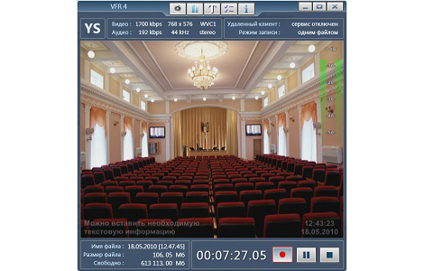

Программа для захвата и записи аналоговых видео и аудио сигналов. Может использоваться для создания архивных материалов при проведении видеоконференций, медицинских обследований, судебных заседаний и других мероприятий, где требуется фиксация происходящих событий.
Основные возможности программы:
- Запись видео и звука в формате.
- Оперативное наложение на записываемое изображение информации о текущем времени, а также текстовых комментариев.
- Визуальный контроль уровня звукового сигнала.
- Полноэкранный режим.
- Временная остановка записи (режим "Пауза"), с сохранением возможности мониторинга видео и звука.
- Функция удаленного управления по IP.
- Автоматическая разбивка файла по заданному размеру или по времени воспроизведения.
- Использование в качестве источника звука практически любого аудиоустройства установленного в системе. При этом сохраняется полная синхронизация между видеоизображением и звуковым сопровождением.
- Вывод звука на линейный выход звуковой карты компьютера.
- Операционная система Windows 7(х32).
- Обновление NetFramework 3.0 или выше.
- DirectX (с обновлением за март 2009 г. или выше).
- Установленное и настроенное устройство захвата видеосигнала (карта захвата, ТВ-тюнер, USB-камера и другие, имеющие в своем составе WDM драйвер).
Microsoft DirectX (март 2009г.)